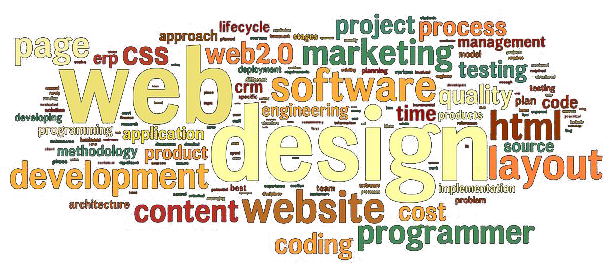

Unidad 1
El objetivo de esta actividad es estudiar una aplicación distribuida que esté actualmente funcionando, para que el estudiante comprenda el alcance de los conocimientos aprendidos y los contextualice dentro de su aplicación en un ámbito real.


©2014/2015 Programacion Web · Built with so much love by Joaquin Pereira